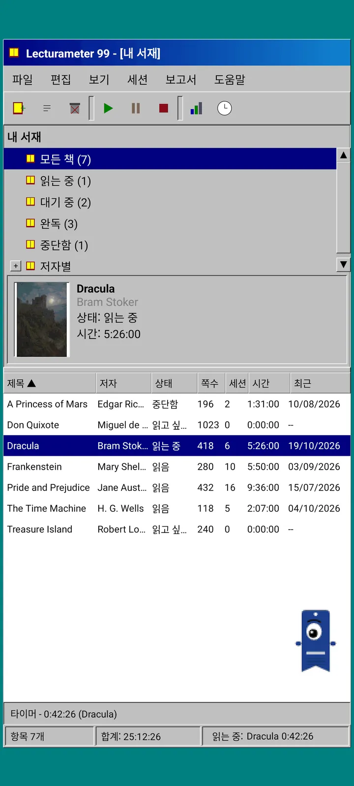
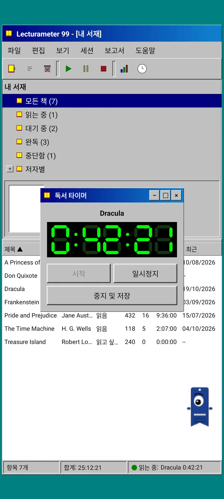
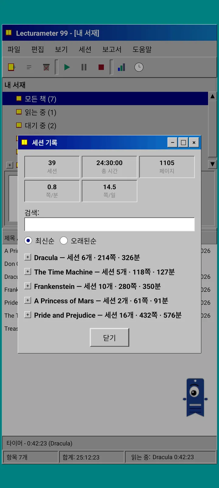
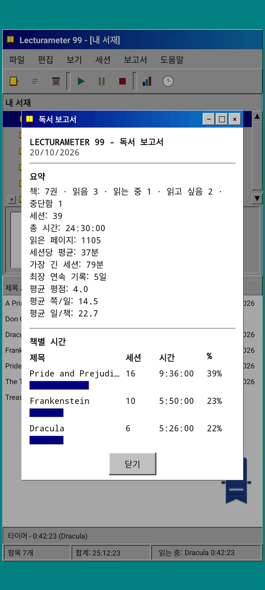

블로그 · 2026-09-24
Lecturameter 1999: Lecturameter가 옛날 PC 프로그램이라면 어떤 모습일까?
창, 메뉴, 표, LCD 타이머를 갖추고 실제 백업을 열 수 있는 또 다른 Lecturameter 클라이언트. 어떻게 만들어졌는지, 무엇이 있고 무엇을 일부러 뺐는지. Play Store와 App Store에 무료로 출시될 예정입니다.
Lecturameter 1999는 몇 달째 구상해 온 작업입니다. 서두르지도, 계획을 세우지도 않고 여기저기서 조금씩 만들었습니다. iOS 버전이 예상보다 단순해서 이것을 끝낼 여유가 생긴다는 걸 알고 나서야 진지하게 매달리기 시작했습니다.
유일한 실험은 아닙니다. Lecturameter 세계에는 제 머릿속에 있는 다른 프로젝트들도 있는데, 꽤 진행된 것도 있고 겨우 시작만 한 것도 있습니다. 대부분은 아마 빛을 보지 못할 겁니다.
어디서 나온 걸까요?
모든 것은 한동안 맴돌던 실험 하나에서 시작됐습니다.
생각은 완전히 다른 설계 전제 아래서 Lecturameter를 처음부터 여러 번 다시 만들어 보는 것이었습니다. 실제 앱은 건드리지 않고, 대체할 생각도 없이요. 그렇게 일곱 가지 버전이 나왔습니다. 하나는 2016년의 Android 앱을 흉내 냈고, 하나는 2036년에는 어떤 모습일지 상상했고, 하나는 서재를 책장으로 바꿔서 읽을수록 책등이 두꺼워지게 했고, 또 하나는 화면이 두 개인 휴대용 게임기를 위해 설계했습니다.
가장 마음에 든 것은 1999년 버전이었습니다. 구십 년대 후반의 데스크톱 프로그램으로, 빽빽하고 실용적이며 모든 것이 창과 메뉴와 표로 되어 있습니다. 저는 이것을 재미있는 연습 삼아 조금씩 끝내서, 실제 Lecturameter 데이터를 바탕에 둔 완전한 클라이언트로 만들기로 했습니다.
이게 뭔가요?
Lecturameter 1999는 Lecturameter와는 별개의 독립된 앱입니다. 열면 청록색 바탕화면 위에 최대화된 창 하나가 보입니다. 맨 위에는 제목 표시줄과 메뉴가 있습니다. 파일, 편집, 보기, 세션, 보고서, 도움말입니다. 그 아래에는 픽셀로 그린 아이콘이 있는 도구 모음이 있습니다. 가운데 영역은 둘로 나뉩니다. 서재 트리와 표지가 보이는 미리보기 창, 그리고 책 한 권당 한 줄씩 있는 표입니다. 맨 아래 상태 표시줄에는 항목 수, 총 시간, 지금 읽고 있는 책이 나옵니다.



Lecturameter와 같은 데이터
이 부분이 실험을 실제로 쓸 수 있는 것으로 바꿔 줍니다. 1999 스타일의 껍데기 아래에는 실제 Lecturameter 데이터 모델이 그대로 들어 있습니다. 같은 책, 같은 세션, 같은 상태, 점수, 노트입니다. 내보내는 백업은 Lecturameter가 내보내는 것과 같은 파일이고, 가져오는 것도 같은 파일입니다.
실제로는 파일 메뉴에서 백업을 가져와 서재 전체를 1999 스타일의 표로 볼 수 있다는 뜻입니다. LCD 타이머로 일주일 동안 읽고, 내보내고, 새 세션을 가지고 최신 앱으로 돌아가면 됩니다. 그 사이에 필드 하나도 잃지 않습니다. Goodreads CSV도 가져오고 내보낼 수 있습니다.
책 검색은 Lecturameter와 같습니다. 앱 자체 카탈로그와 Google Books를 조회해서 제목, 저자, 페이지 수, ISBN, 표지를 채웁니다. 표지는 포스터화하고 부드럽게 처리하지 않고 그려서, 그 시절 GIF처럼 보입니다.
세션, 기록, 보고서
읽기 흐름은 Lecturameter의 것을 창으로 옮긴 것입니다. 표에서 책을 고르고 재생 버튼을 누릅니다. 타이머 창이 열리고, 검은 바탕에 초록색 칠 세그먼트 표시가 나타납니다. 창을 옮기거나, 작업 표시줄로 최소화하거나, 닫아도 됩니다. 시간은 상태 표시줄에서 계속 세어집니다.
정지를 누르면 세션 저장 대화상자가 열립니다. 날짜, 분, 첫 페이지와 마지막 페이지, 코멘트가 있습니다. 입력하는 동안 요약이 페이지 수와 속도를 계산합니다. 책의 마지막 페이지에 도달하면 다 읽었는지 묻습니다. 수동 세션은 세션 메뉴에서 추가합니다.
기록은 세션을 책별로 묶어서 더하기와 빼기가 있는 트리로 보여 주고, 맨 위에는 다섯 가지 수치가 있습니다. 세션, 총 시간, 페이지, 분당 페이지, 일일 페이지입니다. 세션을 두 번 탭하면 편집하고, 길게 누르면 삭제합니다.
통계는 프린터에서 나온 것 같은 고정폭 텍스트로 된 독서 보고서입니다. 최장 연속 기록과 평균 점수가 담긴 요약, 블록 막대로 보여 주는 책별 시간, 하루 페이지 수로 본 속도, 매일 읽은 페이지에 따라 문자로 그린 한 해 달력, 그리고 최근 칠 일입니다.



Pagi 99
Pagi도 1999년으로 함께 옵니다. 눈이 하나인 책갈피 실루엣은 같지만 픽셀로 그려져 있고, 그 시절 사무용 도우미처럼 화면 위를 자유롭게 돌아다닙니다. 손가락으로 끌 수 있고, 탭하면 짧은 한마디를 하며, 지금 하는 일에 따라 표정이 바뀝니다. 책을 검색하면 생각하고, 타이머가 돌아가면 책을 읽고, 세션을 저장하거나 책을 다 읽으면 축하합니다.
앱의 팁은 Pagi에 매달린 노란 말풍선으로 한 번씩 나타납니다. 다시 보고 싶다면 도움말의 「오늘의 팁」에 있습니다.



일부러 뺀 것
Lecturameter 1999는 일부러 더 단순합니다. 실험이고, 원칙적으로 출시 후에는 더 이상 개발하지 않을 겁니다. 새 기능은 계속 Lecturameter에 들어갑니다.
만들면서 읽기 흐름에 영향을 주지 않는 것은 모두 빼기로 했습니다. 그래서 Lecturameter 1999에는 Pro가 없습니다. 보이는 것이 전부입니다.
Lecturameter 1999는 Lecturameter가 지원하는 모든 언어로 출시됩니다.